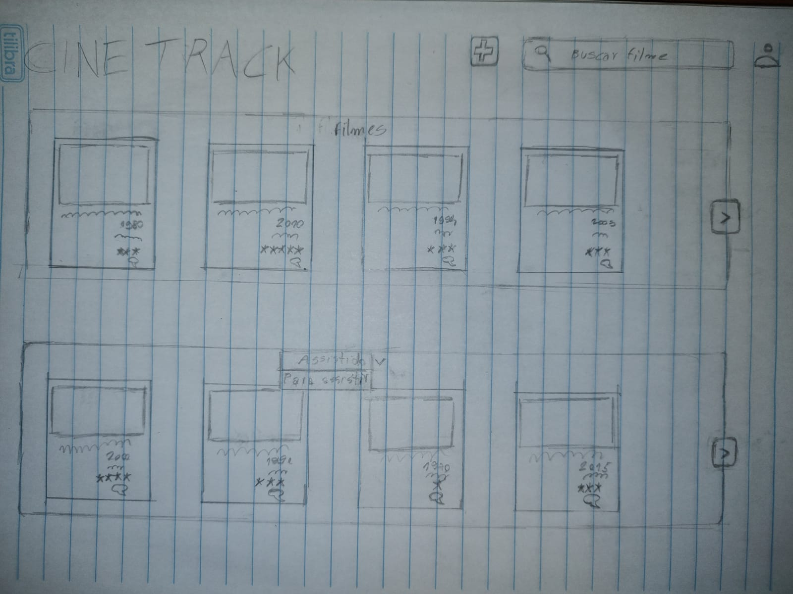

| Título | Ano | Gênero | Status |
|---|---|---|---|
| A Origem | 2010 | Ficção científica | Assistido |
| Parasita | 2019 | Suspense | Assistido |
| O Auto da Compadecida | 2000 | Comédia | Assistido |
| Duna: Parte Dois | 2024 | Ficção científica | Assistindo |
| Interestelar | 2014 | Ficção científica | Quero assistir |
| Cidade de Deus | 2002 | Drama | Quero assistir |

Como os dados são organizados
- Título
- Ano
- Gênero
- Pôster (URL ou caminho da imagem)
- Nota (1 a 5)
- Status (assistido, assistindo ou quero)
- Comentário